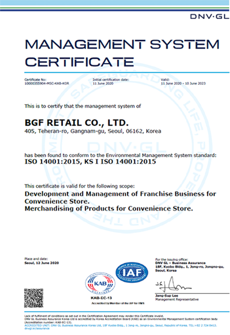
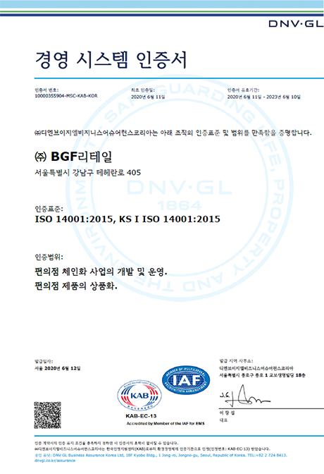

환경경영
환경경영 방침
BGF 리테일은 기업 이념에 근거하여 지구 환경에 공헌하는 상품·서비스의 제공으로 지속 가능한 사회의 실현에 공헌해 나갈 것입니다.
- 01
우리는 법률을 준수하고 국내외 동종업계를 선도하는 환경목표를 수립하여 운영함으로써 수준을 향상시켜 나간다.
- 02
우리는 친환경적인 서비스를 제공하기 위해 사업의 전 과정에서 엄격한 자체 기준을 설정하여 지속적인 혁신을 추구한다.
- 03
우리는 기업시민으로서 사회적 책임을 바탕으로 지역사회의 환경 개선과 안전한 사회 조성을 위해 적극 노력한다.
- 04
우리는 투명하게 정보를 공개하여 기업의 사회적 책임을 다하며, 지역사회 및 이해관계자와의 소통에 성실히 임한다.
- 05
본 방침을 준수하기 위해, 우리는 모든 사업 활동에서 환경을 최우선으로 고려하여 전 임직원이 지킬 수 있도록 힘쓴다.
환경경영시스템 (EMS)


- 환경경영시스템 구축
- Environment Management System
-
BGF리테일은 경영활동의 전 과정에서 지속적 환경 성과를 개선하고 환경 리스크를 효과적으로 관리하기 위해 국제 표준인 ISO14001 표준에 기반하여 환경경영시스템(Environment Management System)을 구축하였습니다.
이에 환경경영을 기업경영의 방침으로 삼고 구체적인 목표와 세부 목표를 정한 뒤 이를 달성하기 위하여 조직, 절차 등을 규정하였으며, 인적·물적 자원을 효율적으로 배분하고 조직적인 관리체제를 통해 환경리스크를 체계적으로 관리 개선해 나가겠습니다.
주요활동
BGF리테일은 CU플랫폼을 활용해 친환경 성과를 창출할 수 있는 비즈니스 모델을 지속적으로 개발하고 있습니다.